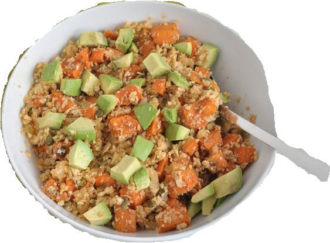
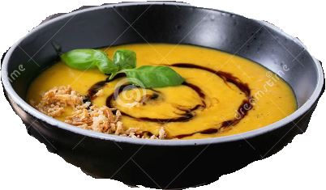

Health is not about
how much
Weight you Lose
It's all about
Life you Gain
Sweet potatoes are sweet, starchy root vegetables that are grown worldwide. They come in a variety of sizes and colors — including orange, white, and purple — and are rich in vitamins, minerals, antioxidants, and fiber.Not to mention, they provide a number of health benefits and are easy to add to your diet.Some soluble and insoluble fibers can also be fermented by the bacteria in your colon, creating compounds called short-chain fatty acids that fuel the cells of your intestinal lining and keep them healthy and strong
Sweet Potato and Quinoa Bowl

A super healthy meal loaded with fibre and protein. Sweet potato chunks, earthy quinoa and loads of veggies come together to make a wholesome meal. Heat the oil in the kadhai.Add bay leaves and onion and fry till onion is translucent. Add pepper, cayenne, cooked sweet potato and coconut.Fry well till nice aroma comes out of coconut. Add raisins/cranberries, cashew nut and fry till cashews are brown in color. Mix well and fry for another 5 minutes.Mix in cooked quinoa and mix well. Leave it on a medium flame for 3 minutes.Switch off and enjoy.
Sweet Potato Rice
A great recipe to pack in your or your kid's lunch box. It's an easy way add vitamin-rich sweet potatoes to your diet. Heat oil in a pan. Add garlic and fry till slightly brown in color. Add sweet potatoes and salt , fry till half cooked. Add chilli powder and ginger juice, cook it fully. Add spring onion and mix well. Add cooked rice and mix well. Switch it off and serve hot.
Sweet Potato Soup
A subtlety sweet soup with strong flavours of sweet potatoes, cashews and pineapple to delight your senses. Melt butter in a skillet over medium-low heat. Add onion and sauté until soft, stirring it often. Add garlic and sauté for an additional two minutes. Add pineapple, potatoes, vegetable stock, urrak, cream, salt and pepper. Bring to a boil, reduce heat to medium, and simmer for 15 minutes until potatoes are tender. Process it in a blender or food processor until smooth. Strain and chill. Serve cold, garnished with chopped coriander leaves.